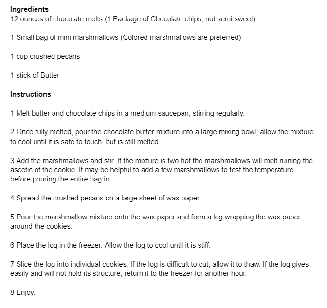

These are the cookies my Grandma always leaves out for Santa Clause. They taste excellent and when made correctly look even better. By altering the color of marshmallows used this cookie can be used in a variety of holiday themes. I prefer using a green and red color pattern to create christmas cookies. If you make these cookies and can’t understand why they are called stained glass window cookies you probably melted the marshmallows. - Jacob Hunter
